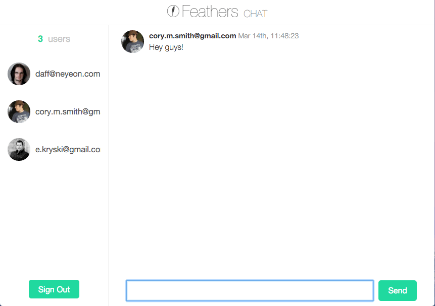

创建聊天应用程序¶
好吧！让我们构建我们的第一个Feathers应用程序！我们将使用 NeDB 作为数据库构建一个实时聊天应用程序.这是一个很好的方式来涵盖在现实世界的应用程序中你需要做的所有事情以及Feathers如何提供帮助.拥有实时组件比Todo列表更有意义. :眨眼:
在本教程中,您将从无到有实时聊天应用程序,包括注册,登录,基于令牌的身份验证和授权,所有这些都使用RESTful和实时API.您可以立即阅读本指南,但我们建议您首先在 Feathers 基础知识 中对Feathers有一个基本的了解.

聊天应用截图¶
您可以再 这里 找到一个完整的工作示例.
使用生成器创建新应用程序.
添加API端点以存储消息.
添加用户注册和登录.
清理和处理用户数据.
通过创建一个小型实时聊天前端,了解如何在浏览器中使用Feathers.
编写自动化单元测试并将代码覆盖添加到聊天应用程序中.